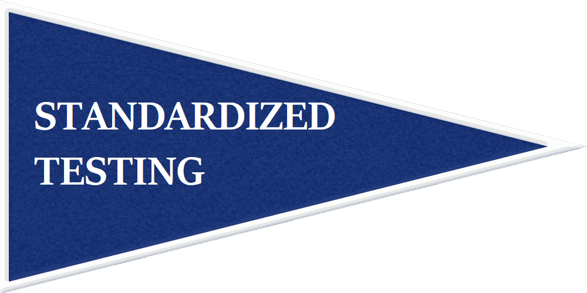
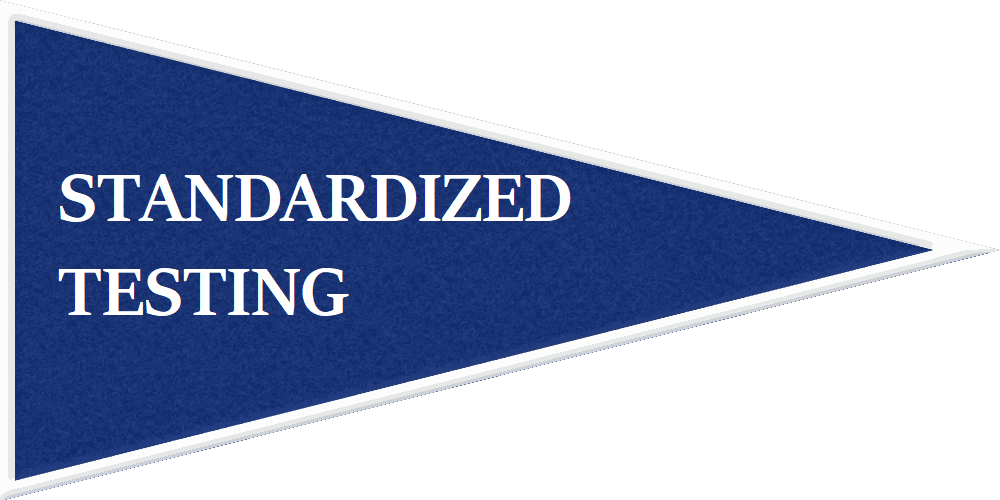

What The College Essay Is For
The college essay is an opportunity to show your character. If you successfully demonstrate your character in your essay and this is supported by the rest of your application, then you have written a good essay and likely have a cohesive application.
Your essay doesn’t need to amaze or wow the reader; often times, many applicants try to write about a traumatic event or something incredible that has happened to them. Writing about these things can actually make it more difficult to write a good college essay; instead of giving insight into your personality and character, your essay often ends up focusing on an external event.
For example, writing about the death of a loved one is a common essay idea but because the essay is focused on another individual rather than the applicant, it can often yield a bad college essay. If you write about the death of a loved one, the focus should still be on YOU and how you were affected by them, how they brought out your desirable traits, etc.
A great essay communicates your character clearly and truthfully in an entertaining and well written way.
Explaining The College Essay Through A 'Famous' Example Essay
I brought this essay up before but will use it again because it’s a perfect example of a ‘great’ essay according to admissions officers (which is what matters). It is easy for me to explain the college essay by using this essay as an example.
This essay got a high-school senior into 5 Ivy League schools and Stanford
She starts the essay mid action and recounts a semi-entertaining story of her running through Costco as a child. She uses a diverse vocabulary and sprinkles in some safe humor.
She gives examples of her intellectual curiosity throughout the essay and gives insight into her thought process. She does so in a way that doesn’t feel incredibly forced.
“Purchasing the yuletide hickory smoked ham inevitably led to a conversation between my father and me about Andrew Jackson’s controversiality. There was no questioning Old Hickory’s dedication; he was steadfast in his beliefs and pursuits – qualities I am compelled to admire, yet his morals were crooked. We both found the ham to be more likeable–and tender.”
This is her way of demonstrating her kindness/ good morals, steadfastness, and intellectual curiosity with just one passage. She sprinkles in some of her other ‘desirable qualities’ but keeps the focus on what she believes to be her most desirable quality- her intellectual curiosity.
She strengthens her argument for intellectual curiosity even further by citing real examples.
“Whether it be through attempting aerial yoga, learning how to chart blackbody radiation using astronomical software, or dancing in front of hundreds of people, I am compelled to try any activity that interests me in the slightest.”
She even sprinkles in some of her academic knowledge.
“I was a conquistador, but rather than searching the land for El Dorado, I scoured aisles for free samples.”
Finally she closes with a reminder of who she is and what she wants admissions officers to take away from her essay.
“My intense desire to know, to explore beyond the bounds of rational thought; this is what defines me. Costco fuels my insatiability and cultivates curiosity within me at a cellular level. Encoded to immerse myself in the unknown, I find it difficult to complacently accept the “what”; I want to hunt for the “whys” and dissect the “hows”. In essence, I subsist on discovery.”
This is her eloquent and lighthearted way of saying I AM INTELLECTUALLY CURIOUS.
Here are some of the things she does that makes her essay a good essay. You will see that this matches up to the list in College Essay Summary:
- The essay is well written and semi entertaining. She showcases her desirable character traits in a way that is lighthearted and doesn’t feel too forced.
- She makes it clear she has intellectual curiosity and cites countless examples including REAL LIFE examples.
- She writes in a unique voice and shows her thought process.
- She demonstrates some academic knowledge.
Explaining The College Essay Through My Essay
I’ll show you my college essay because it is an example of an essay that is not great, not riveting, and is a bit too metaphorical, but still shows my personality and desirable trait(s) making it a ‘good’ essay. That is, it accomplishes what the essay needs to accomplish without sounding too unlikeable, narcissistic, or pretentious.
It’s not entertaining or memorable. I didn’t talk about a life changing event. I talked about a hill near my house and used the hill metaphorically to show what I believe to be my most compelling trait- a desire to succeed and propel others along with me. I took the easy route by keeping my essay metaphorical. This way I could simply speak my thoughts and show my desirable trait without it seeming too out of place.
It is hard to show multiple facets of your character through the essay; focusing on simply one- like intellectual curiosity in the girl’s case or the desire to bring others to succeed for me- is often much easier and the rest of your character can often be shown in the way you write and think or through more subtle references.
My advice is to pinpoint your strongest and most compelling trait and use your essay to highlight that trait. The rest of your application should then support that.
College Essay Summary
- Showcase your personality, thought process, and desirable trait(s). Keeping it light hearted can make you seem more likeable, but it depends on the subject matter.
- Write eloquently and naturally. Don’t force big words or vocabulary.
- Use REAL LIFE examples of things that you have done that support your trait(s) or character.
- Provide more insight into you; don't just repeat surface level information from the rest of your application.
- Think about how your essay fits in with the rest of your application. Other parts of your application should support the desirable trait(s) you are portraying and align with your presented character.
- Find a way to showcase your personality and desirable trait(s) seamlessly whether it be by including an internal monologue, writing metaphorically, or any other means.
Figuring out your desirable traits/ qualities and constructing a fluid essay that incorporates these elements is the hard part. If you can accomplish this, if your essay is true to you, and if your essay makes you seem at least somewhat likeable, then you have a great college essay.
This Year's Common App Essay Prompts
2017-2018 Common Application Essay Prompts
- Some students have a background, identity, interest, or talent that is so meaningful they believe their application would be incomplete without it. If this sounds like you, then please share your story. [No change]
- The lessons we take from obstacles we encounter can be fundamental to later success. Recount a time when you faced a challenge, setback, or failure. How did it affect you, and what did you learn from the experience? [Revised]
- Reflect on a time when you questioned or challenged a belief or idea. What prompted your thinking? What was the outcome? [Revised]
- Describe a problem you've solved or a problem you'd like to solve. It can be an intellectual challenge, a research query, an ethical dilemma - anything that is of personal importance, no matter the scale. Explain its significance to you and what steps you took or could be taken to identify a solution. [No change]
- Discuss an accomplishment, event, or realization that sparked a period of personal growth and a new understanding of yourself or others. [Revised]
- Describe a topic, idea, or concept you find so engaging that it makes you lose all track of time. Why does it captivate you? What or who do you turn to when you want to learn more? [New]
- Share an essay on any topic of your choice. It can be one you've already written, one that responds to a different prompt, or one of your own design. [New]
Supplementary Essays
It's important to remember that your essays should always give more insight into you or something you have done. If you write about an event already in your application there should be more details, descriptions, etc.
You have to try and find a balance between cohesive and repetitive. You want there to be a unifying theme- usually your desirable trait(s)- and it is necessary to reinforce the theme, but be careful not to be too repetitive.
 
